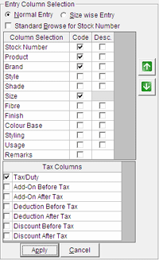

You can configure the data entry columns for the Purchase Order here, if the system parameter Allow PO/Indent Configuration under the category Purchase Order is enabled. Otherwise, the setting done using Purchase Order Configuration is used and you can only sequence the columns here.
The Entry Column Selection group is as shown.

Normal Entry: Click to generate purchase order based on Class1, Class2, SubClass1, SubClass2, Size, ItemAnalysis Code or a combination of any of these attributes.
Size Wise Entry: Click to generate purchase order based on size. Class1, Class2 and Size are selected by default and you cannot change this.
Standard Browse for Stock Number: Choose to open the Advanced Item Search window instead of Browse - Stock Number window on pressing F2 while generating the purchase order. Advanced Item Search window allows specification of item selection criteria based on multiple attributes whereas Browse - Stock Number window allows item selection only based on code and description.
Column Selection: Displays the list of attributes for which the values may be provided while preparing the PO.
Code: Select the attributes for which the code will be provided while preparing the PO. All the selected columns will appear enabled during PO generation. However, data entry is not mandatory for all columns.
Desc.: Select the attributes for which the description will be displayed while preparing the PO. All the selected columns will appear grayed in the grid.
Click  or
or  to move the
currently selected attribute up or down to place it at the appropriate
position. The selected attributes will be displayed in the PO entry grid
on the Purchase Order/Indent Generation
window, in the same order as set here.
to move the
currently selected attribute up or down to place it at the appropriate
position. The selected attributes will be displayed in the PO entry grid
on the Purchase Order/Indent Generation
window, in the same order as set here.
Notes:
1. If you have selected the option Size Wise Entry, then Class1, Class2 and Size are deactivated. However, their positions can be changed. Also, the Stock Number cannot be selected.
2. Based on the Class1 and Class2 combo selected, size groups are selected and displayed on the top of the grid on the Purchase Order/Indent Generation window.
Tax Columns: Select the appropriate taxation parameter from the list. The values selected will be considered for tax computation, depending on whether it is before tax or after tax.
Tip: You can change any of the combination with in normal entry mode, but cannot club both normal entry and size wise entry in a given purchase order.